1. Executive summary
The shop's charts and capability hold where variation stays within the subgroup, and fail where it does not. On punched characteristics and flatness, the charts in use signal close to the rate of correctly set limits, and production capability stays above 1.33: Ppk 1.55 on punched characteristics, and Ppu 1.79 on flatness. On formed characteristics, hole diameters and burr, they do not. Production Ppk on critical formed characteristics is 1.04 against 1.84 filed at PPAP. 60 of the 61 burr nonconformances of 2025 fell on runs past the die's stated sharpening interval.
Three sources of variation sit behind these gaps. Coil-to-coil shifts carry 54% of the variance on formed characteristics. Burr and hole size grow with shots since sharpening, and dies are sharpened at a median 1.14 times their stated interval. Die events between routine checks led to 12 of the 14 sorting events of 2025.
Two gaps cut across every class:
- On the paper presses an action is recorded on 28% of signals, and adjustment at the press adds 10% to the variance of the characteristics it targets.
- 164 of the 180 check fixtures have no gauge study on file, and the two reworked fixtures that were studied consume more than 30% of tolerance.
In 2025 scrap and rework were 3.12% of revenue ($1,242,201). Customer PPM was 463 on 58 complaints, level with 491 in 2024. 14 sorting events covered 101,154 parts.
| Measure | 2025 |
|---|---|
| Scrap booked, $ | 1,198,753 |
| Rework labor booked, $ | 43,448 |
| Scrap and rework, share of revenue | 3.12% |
| Revenue, $ | 39,835,721 |
| Complaints, with duplicate entries left out | 58 |
| Customer PPM (95% interval) | 463 (283 to 664) |
| Sorting events | 14 |
| Quantity sorted | 101,154 |
| Sorting cost booked or estimated, $ | 8,674 |
2. Scope
The assessment covered every chart in use on all eleven presses in 2025: about 1,550 characteristics on 179 parts, and about 203,000 subgroups. The four high-speed presses chart on paper and the seven medium presses on the SPC software. The assessment drew on seven source systems and ran three studies of its own, from 12 to 15 January 2026: gauge R&R on three check fixtures, and attribute agreement on the burr check. Capability was measured on the 130 critical characteristics with a PPAP study on file, against the production record that followed each study.
| Item | Assessed |
|---|---|
| Presses | 11: 4 high-speed charting on paper (PR-01 to PR-04) and 7 medium charting in the SPC software (PR-05 to PR-11) |
| Parts and dies | 179 parts and 169 dies run in 2025, on 2,216 production runs |
| Characteristics charted in 2025, by class | Formed heights and bend angles: 397 (94 critical) Hole diameters: 23 (23 critical) Other punched and dimensional: 439 (41 critical) Flatness: 32 (0 critical) Burr by limit sample: 179 (0 critical) Burr on the lab gauge: 179 (0 critical) Pin-gauge attribute checks: 302 (0 critical) Total: 1,551 (158 critical) |
| Subgroups recorded in 2025 | 203,383: 134,073 keyed in the SPC software and 69,310 on paper charts, transcribed |
| Sources, with rows of 2025 | SPC software: 1,560 characteristics; 1,786 limit sets; 203,383 subgroups; 14,582 alarms Press monitors: 5,831 fault events; 2,216 tonnage windows ERP: 2,216 production runs; 1,749 coils received; 6,375 scrap transactions; 2,655 shipments QMS: 392 nonconformances; 14 sorting events; 64 complaints; 2,655 dock audits; 326 PPAP studies on file Die maintenance log: 735 die events Calibration system: 420 gauges; 765 calibrations; 84 gauge studies on file Accounting: 317 quality cost lines |
| Studies run by the assessment | Gauge R&R: F-20417 on C-20417-06, 12 January 2026; F-10823 on C-10823-04, 13 January 2026; F-31102 on C-31102-02, 14 January 2026 Burr attribute agreement: 15 January 2026, 6 operators, 50 parts, 2 trials |
| Capability base | 130 critical characteristics with a PPAP study on file; 146 studies; each compared against the production record of the twelve months after the study, or to 31 December 2025 |
3. SPC assessment
Charts, limits and capability hold on punched characteristics and flatness, and do not hold on formed characteristics, hole diameters and burr.
- Formed characteristics fail on limits, capability and reaction.
- Hole diameters fail on limits, and their capability is out of line with PPAP.
- Burr on the lab gauge fails on capability and has no gauge study; the burr check by limit sample is partial on measurement.
Two gaps run across every class: gauge studies cover few of the gauges in use, which leaves measurement short on every class but hole diameters, and signals on the paper presses mostly go unanswered. Plant-wide, recording holds on the day shift and falls short on nights and at the first check of the shift.
| Characteristic class | Chart and limits, software presses | Chart and limits, paper presses | Capability | Measurement | Sampling frequency | Reaction |
|---|---|---|---|---|---|---|
| Formed heights and bend angles | Does not hold 18.8% of baseline signals flagged | Does not hold 36 of 100 subgroups signal under computed limits | Does not hold Ppk 1.04 against 1.84 filed; 1 of 94 within 0.25 | Does not hold study on file for 16 of 179 gauges; %GRR 9.8 median on those | Partial 3,568 parts between checks | Does not hold 32% of paper signals with an action; added variance 21.9% |
| Hole diameters | Does not hold 4.3% of baseline signals flagged | Does not hold 61 of 100 subgroups signal under computed limits | Partial Ppk 1.45 against 1.98 filed; 1 of 16 within 0.25 | Holds %GRR 9.4 median on 12 of 12 gauges | Holds 3,201 parts between checks | Does not hold 8% of paper signals with an action |
| Other punched and dimensional | Holds 2.6 signals per 100 as set, 3.5 as computed | Holds 5.5 signals per 100 as set, 3.7 as computed | Holds Ppk 1.57 against 1.78 filed; 22 of 36 within 0.25 | Does not hold study on file for 45 of 208 gauges; %GRR 9.6 median on those | Partial 3,576 parts between checks | Does not hold 19% of paper signals with an action; added variance 6.9% |
| Flatness | Holds 2.6 signals per 100 as set, 3.1 as computed | Holds no signal in 125 subgroups, as set or as computed | Holds Ppu 1.79 | Does not hold study on file for 1 of 27 gauges; %GRR 7.3 median on those | Partial 3,538 parts between checks | Holds 100% of alarms acknowledged |
| Burr by limit sample | n/a not charted on limits | n/a not charted on limits | n/a attribute check | Partial kappa 0.44 against the burr gauge | Partial 3,576 parts between checks | n/a no signals raised |
| Burr on the lab gauge | n/a no limits compared | n/a no limits compared | Does not hold Ppu 1.05 | Does not hold no study on file for 2 gauges | Does not hold 17,812 parts between checks | n/a no signals raised |
| Measure | Days | Nights | All |
|---|---|---|---|
| Planned checks recorded | 93.9% 12,178 of 12,971 | 83.9% 9,453 of 11,270 | 89.2% 21,631 of 24,241 |
| First check of the shift recorded | 76.4% 1,379 of 1,804 | 83.3% 865 of 1,038 | 79.0% 2,244 of 2,842 |
| Keyed entries made more than 20 minutes after the parts | 15.1% 10,112 of 66,803 | 15.1% 7,994 of 52,958 | 15.1% 18,106 of 119,761 |
| Software alarms acknowledged | 100.0% 5,646 of 5,646 | 100.0% 4,828 of 4,828 | 100.0% 10,474 of 10,474 |
| Paper signals with an action recorded | 28.1% 1,658 of 5,899 | 27.4% 1,449 of 5,294 | 27.8% 3,107 of 11,193 |
| Subgroups on a gauge in service and in calibration | 93.2% 103,600 of 111,193 | 92.9% 85,612 of 92,190 | 93.0% 189,212 of 203,383 |
3.1 Chart selection and limits
Criterion: each class charted on a chart that fits its variation, with limits from a stable baseline held until a planned trigger.
Chart selection and limits hold on punched characteristics and flatness, and fail on formed characteristics and hole diameters, in opposite ways on the two chart media.
- Software presses: rolling limits absorb the shifts they should flag. On formed characteristics and hole diameters they flag 17.0% of the subgroups that baseline limits flag.
- Paper presses: limits printed from the PPAP study signal on 42 of every 100 formed-characteristic subgroups, and an action is recorded on 28% of paper signals.
- Other punched characteristics: the software runs close to computed limits, at 2.6 signals per 100 subgroups against 3.5. On paper the printed limits signal more often, at 5.4 against 3.6.
Fixed within-subgroup limits are not the remedy on formed characteristics. Computed baseline limits there signal on 42 of 100 subgroups, because the coil shifts of Section 4.1 sit outside them.
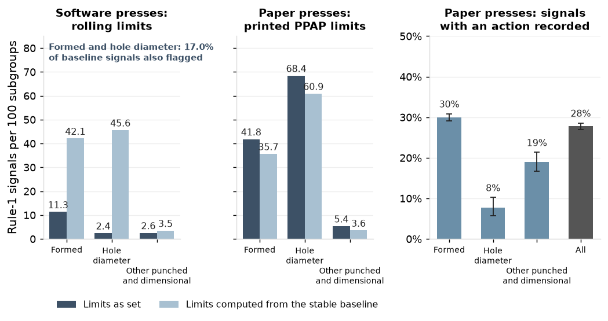
The printed limits signal whether or not the process has moved. With nothing changed, they signal every 4.5 subgroups on formed characteristics and every 17.0 on hole diameters, against every 31.4 and 38.4 under computed limits.
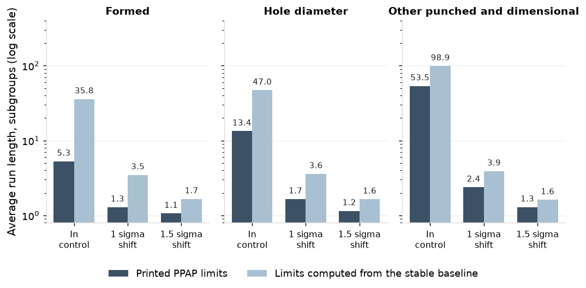
Printed limits are not recomputed after a sharpening. On 54 of the 57 dies on the paper presses they date from the last rebuild, and every sharpening since has run on them.
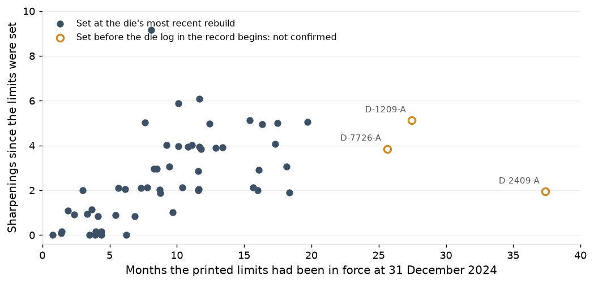
3.2 Capability
Criterion: production Ppk of 1.33 or more on critical characteristics, in line with the Ppk filed at PPAP.
Capability holds in production on punched characteristics and flatness. On formed characteristics the filed Ppk overstates production by 0.8: production Ppk is 1.04 against 1.84 filed, and on 86 of 94 studies the filed figure is at least 0.40 above production. Punched characteristics stay capable at 1.55, against 1.85 filed.
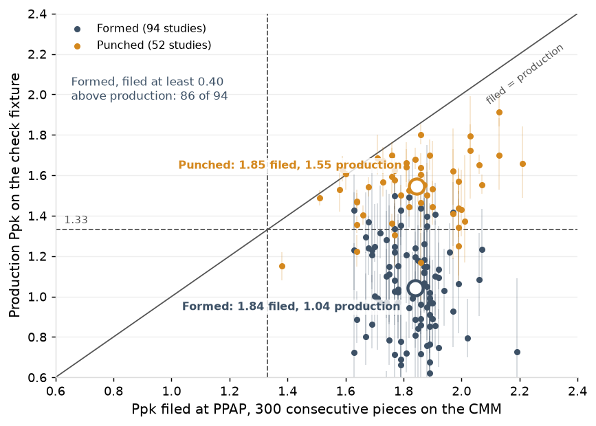
Within punched characteristics, hole position stays closest to PPAP and hole diameter furthest from it.
- Hole position: hole-to-hole and hole-to-edge run at 1.60 and 1.54, against 1.79 and 1.77 filed, and fall within 0.25 of filed on 22 of 36 studies.
- Hole diameter: production Ppk is 1.45 against 1.98 filed, within 0.25 on 1 of 16. Cpk on hole diameters is 2.13, so the shortfall is drift between subgroups (Section 4.2), not spread within them.
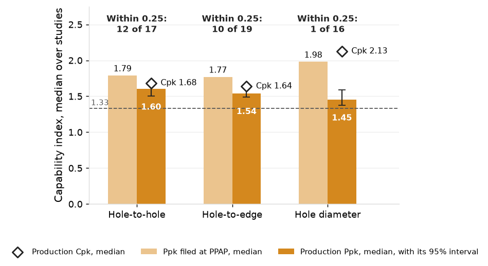
Flatness is capable, at a Ppu of 1.79. Burr height sits at 1.05.
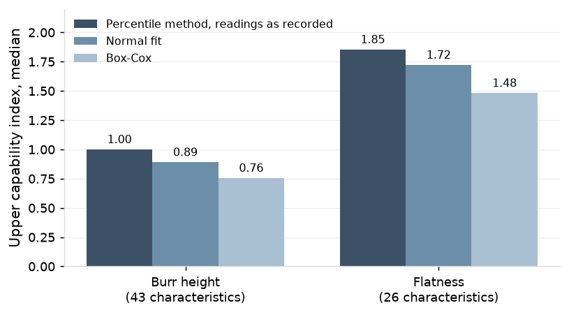
3.3 Measurement systems
Criterion: every gauge in use studied, with gauge R&R under 10% of tolerance on the check fixtures; attribute checks in agreement with the reference gauge; readings recorded as measured.
Measurement holds where it has been studied, but the studies cover few gauges, and two reworked fixtures and the burr check fall short.
- Study coverage: before January 2026 the record held a gauge study on 2 of the 180 check fixtures, both from PPAP. The January studies bring that to 16, of which 8 stand under 10% of tolerance.
- Gauge status: 93% of subgroups were measured on a gauge in service and in calibration. 4.4% were on a gauge away for calibration that day, and 2.7% on one past its calibration due date.
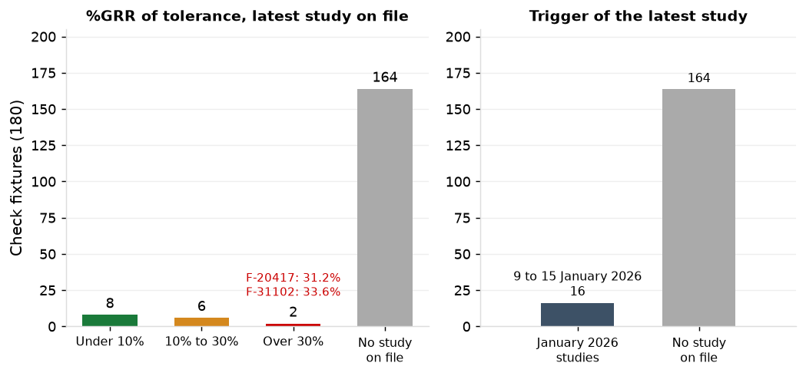
The two fixtures reworked since PPAP consume 31.2% and 33.6% of tolerance, against 8.9% and 8.4% at PPAP. F-10823, which was not reworked, stands at 11.3%.
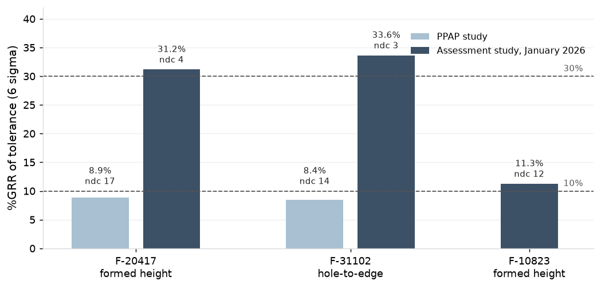
About 70% of the gauge variance on the two reworked fixtures lies between operators.
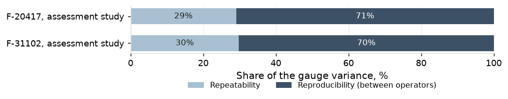
Check fixtures read 0.014 mm above the CMM on 163 matched first pieces, 3% to 5% of the tolerance on the studied fixtures.
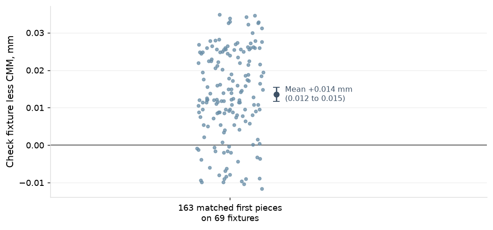
The burr check falls short. Operators agree with the burr gauge on 80% of calls (kappa 0.44), and their reject rates run from 27% to 75% on parts the gauge rejects at 52%.
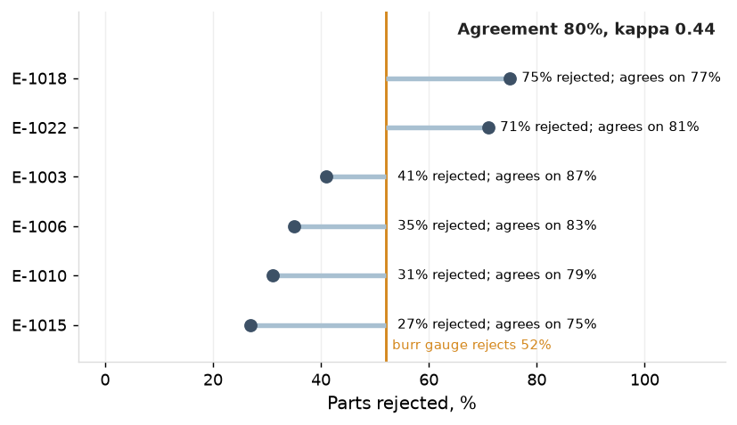
Keyed readings end in 0 or 5 at 1.76 times the expected rate. Paper transcriptions show no preference.
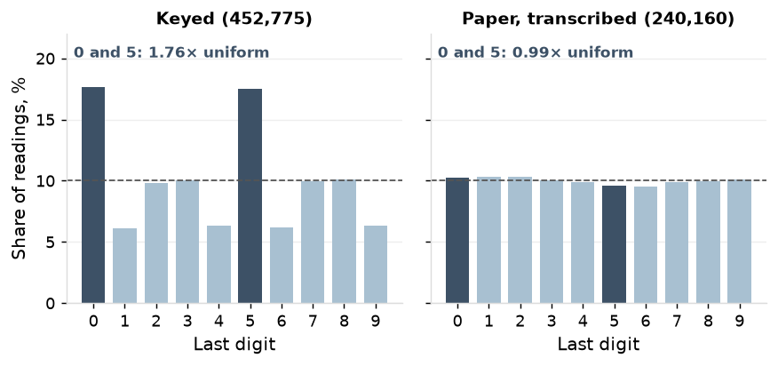
Readings show no pile-up at the specification limits on either entry method. Studying the check fixtures on critical characteristics, rebuilding the two reworked fixtures, and replacing the burr limit samples address these gaps.
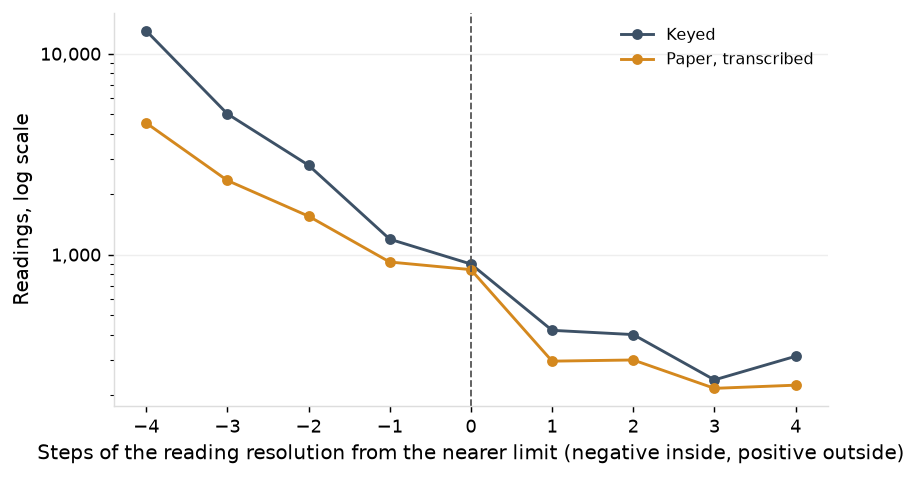
3.4 Sampling frequency and recording
Criterion: checks frequent enough to bound what a die event can pass, recorded on time on every shift.
Check frequency leaves wide windows on the high-speed presses, and recording holds on days but not on nights or at the start of the shift.
- Window size: between two routine checks a press passes a median 1,934 to 16,333 parts at its realised rate, and up to 38,160 at run speed. On the same 60- and 120-minute frequencies, the high-speed presses pass five to six times what the medium presses pass.
- What the checks miss: in 2025, 40% of burr nonconformances and 33% of missing or deformed holes were found after the press, at the dock audit or the customer.
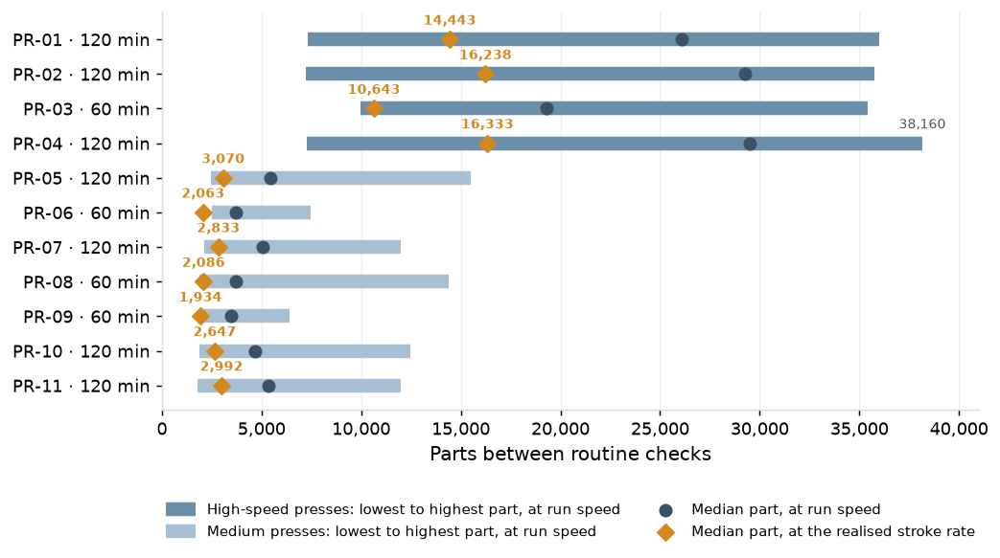
The day shift records 94% of planned checks, and nights 84%. The first check of the day shift is recorded on 76% of occasions, against 95% to 97% at every later hour. On nights the medium presses record 80.8%, the lowest of any press group and shift.
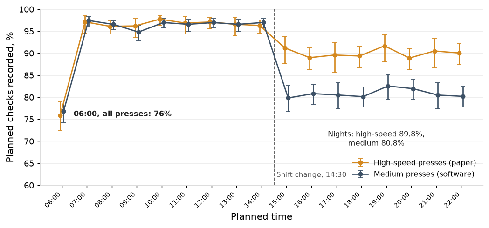
Recorded check times cluster on the hour: 59.9% of keyed routine subgroups and 75.2% of times noted on paper fall within five minutes of it.
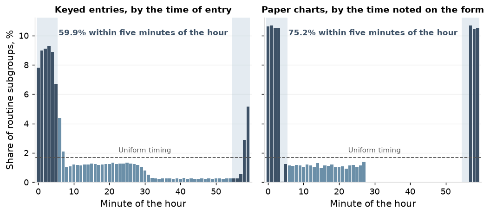
15.1% of keyed entries are made more than 20 minutes after the parts, in a second group that runs to about three hours. Connecting gauges to the terminals removes the delay on variable checks.
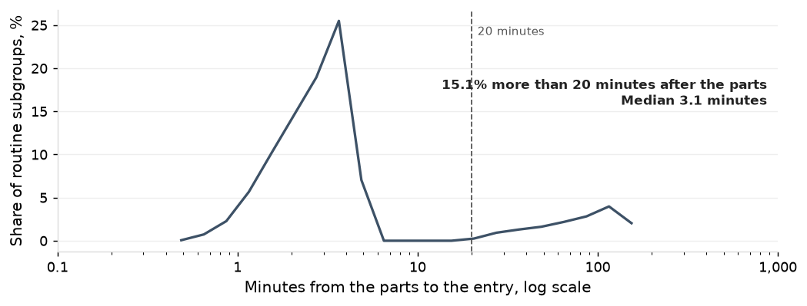
3.5 Reaction to signals
Criterion: every signal answered by the reaction its chart prescribes, with adjustments made only on a signal and recorded.
Signals are acknowledged but not acted on consistently, and adjustment at the press adds variation.
- Software presses: all 10,474 alarms were acknowledged, 4,691 of them with a one-word text.
- Paper presses: an action is recorded on 28% of signals.
- Adjusted characteristics: subgroup means swing back and forth within a coil, with a lag-1 autocorrelation of -0.14 against -0.07 on the others.
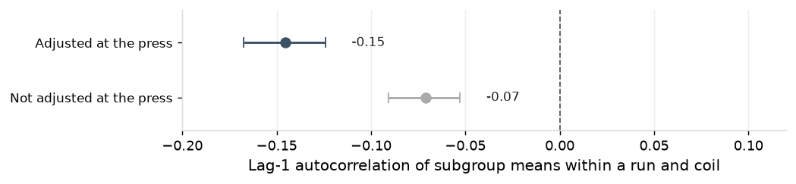
The adjusted characteristics carry 9.9% more variance over all runs than in their runs with no adjustment, and 165 of 204 are higher.
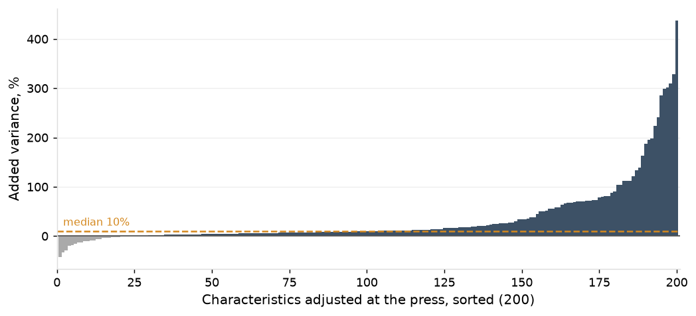
About half of the adjustments are not recorded. An estimated 50% of points beyond two sigma are followed by an adjustment, and 22.5% carry one in the record.
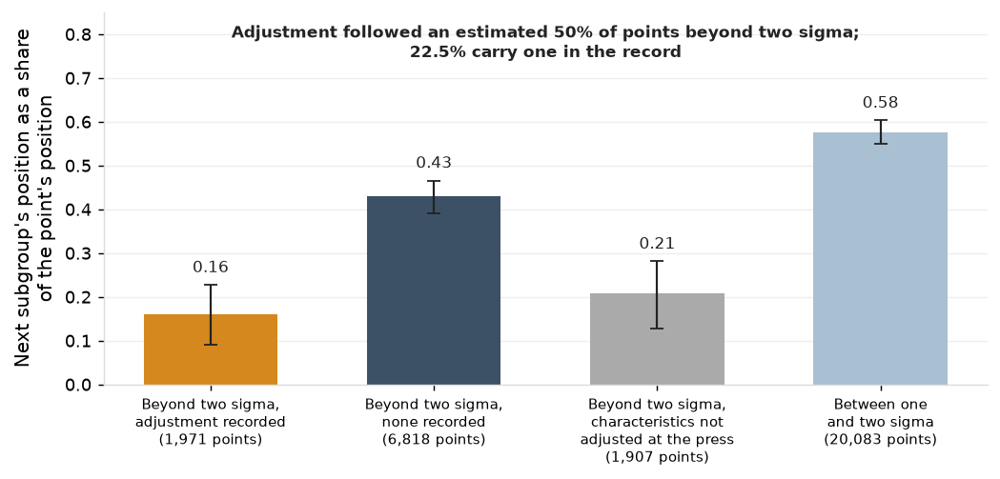
On a single run the pattern is visible: an adjustment followed by a mean on the other side of the centre line, and limits rising to absorb a coil at its own level. A written reaction plan that ties adjustment to a signal or a coil change addresses this.
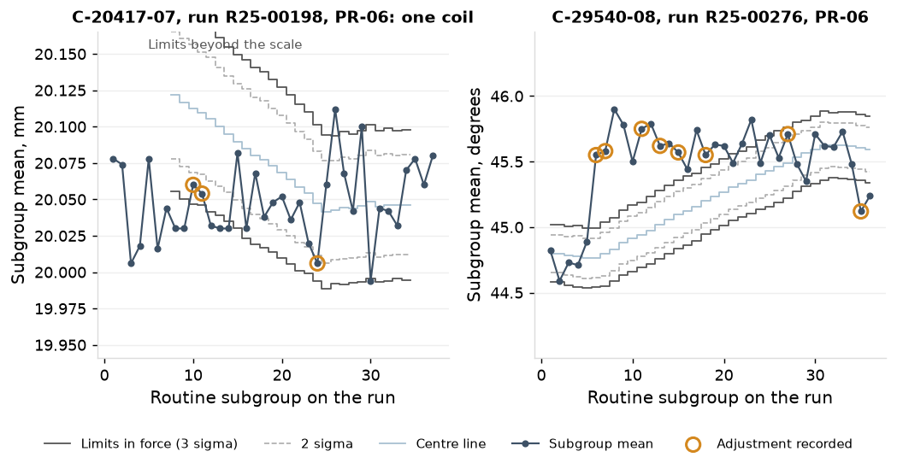
4. Sources of variation
Three sources of variation explain why the gaps in Section 3 fall on formed characteristics, hole diameters and burr.
4.1 Coil-to-coil shifts
Coil-to-coil shifts are the largest source on formed characteristics. 54% of their variance lies between coils, against 2% on punched characteristics, where 88% lies within the subgroup.
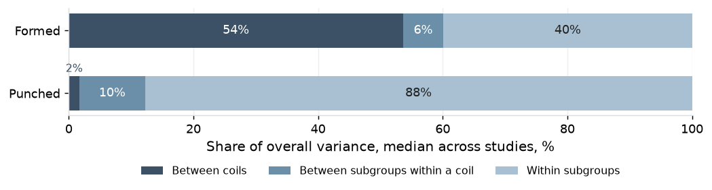
A coil's level is predictable from its certificate. Thickness and hardness leave 2.5% of tolerance about the fit, against 12.1% between coil means. Charting formed characteristics on limits that carry coil-to-coil variation, with a centring step at each coil change, addresses this source.
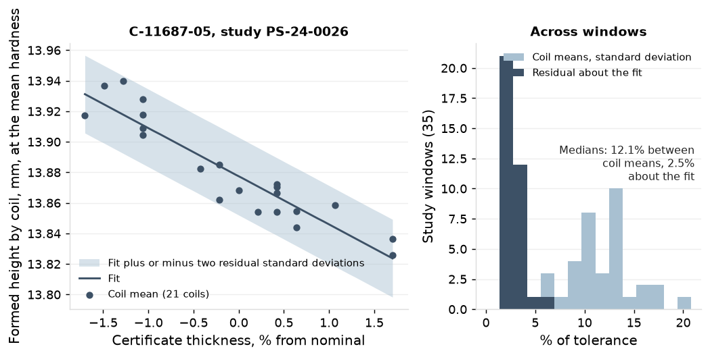
4.2 Die wear
Die wear drives the burr nonconformances and the hole-diameter drift. 60 of the 61 burr nonconformances of 2025 fell on runs past the die's stated sharpening interval, against 17% of all runs.
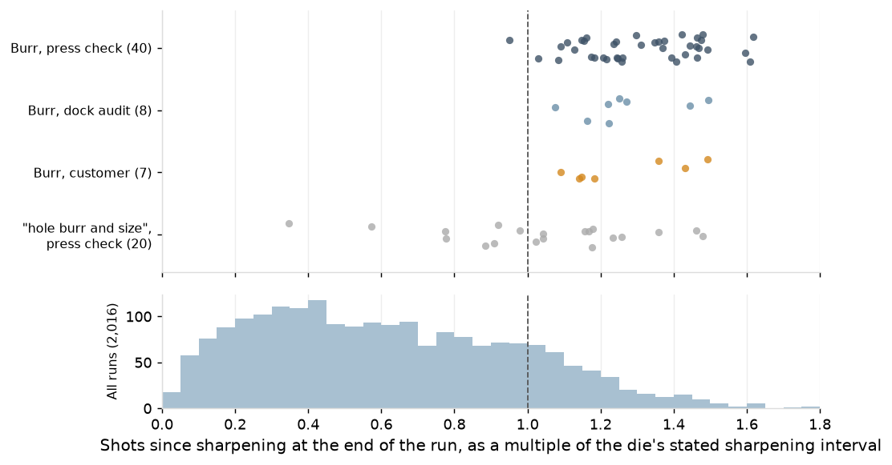
Sharpening runs late, and the stated interval is often set too long. Sharpenings are logged at a median 1.14 times the stated interval. On 41 of 124 dies the stated interval is longer than the shot count at which burr reaches 80% of its limit.
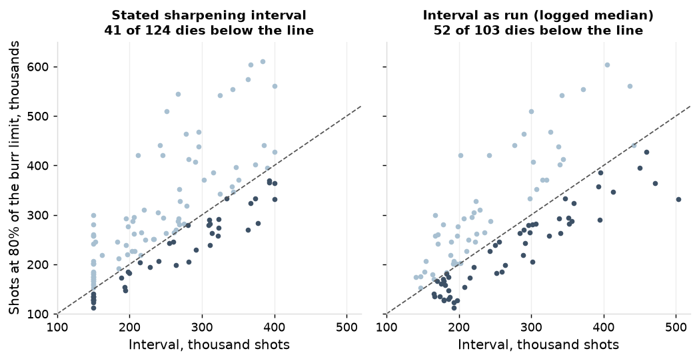
On die D-1333-C burr reaches 80% of its limit at 364,211 shots, against a stated interval of 400,000 and a median 471,403 as run.
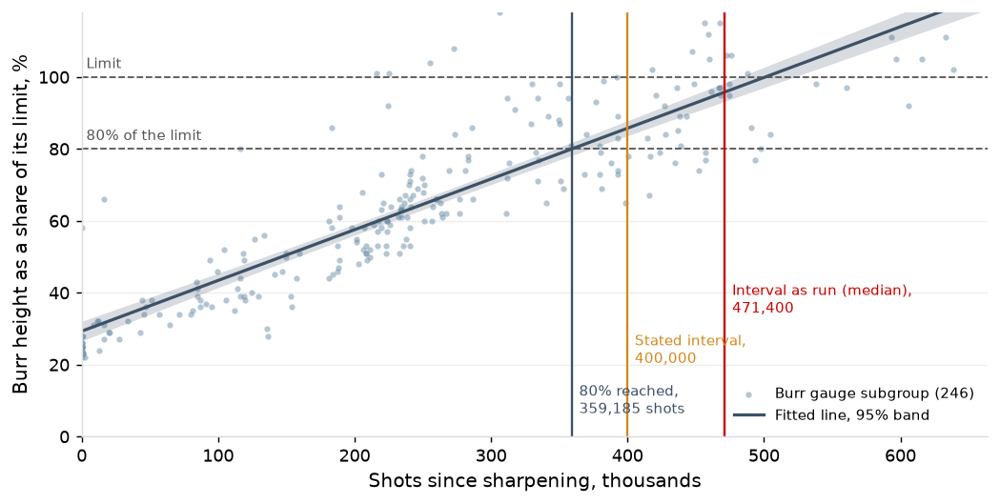
Hole diameters grow at a steady rate within each interval: 0.0092 mm per 100,000 shots on D-0417-B, and 0.0040 to 0.0094 mm across dies. That is 16% to 32% of tolerance over a stated interval. Setting each die's interval from its burr regression and pulling the die at the count addresses both burr and hole size.
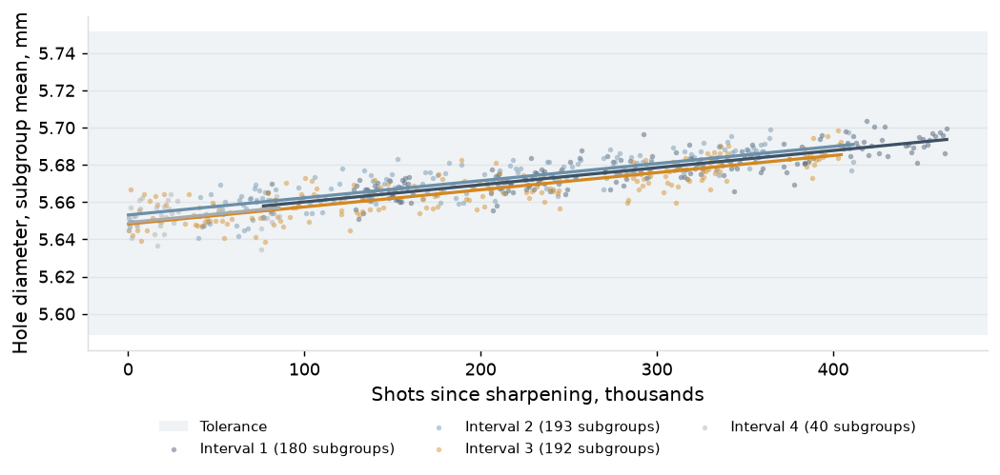
4.3 Die events between checks
Die events between checks cause most sorting, and the check before sets how much is sorted. 12 of the 14 sorting events of 2025 trace to a die event between two checks. Where a die-protection fault bounds the event, the shop sorted a median 3,374 parts. Where none does, it sorted back to the check before, a median 4,996.
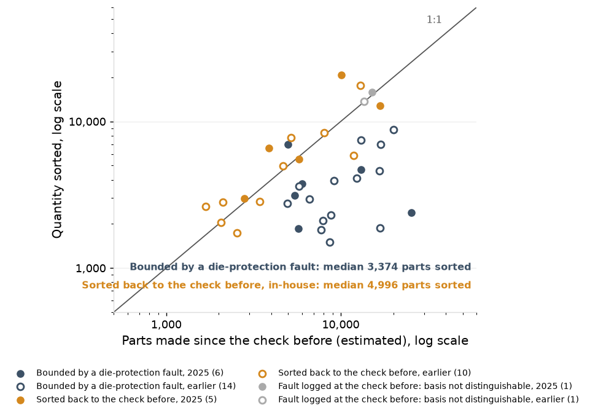
Sorting back to the check before mostly sorts good parts: 37% are rejected, against 77% where a fault bounds the event.
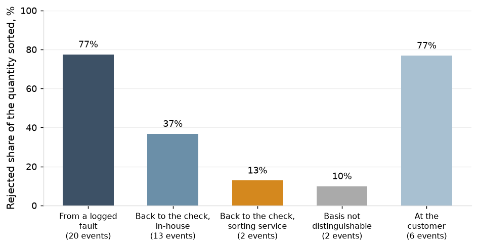
Sorting back to the check before carries the largest share of sorting cost in both years: $3,739 of $8,674 in 2025, and $4,237 of $12,500 in 2024. A per-stroke record would bound these events at the stroke.
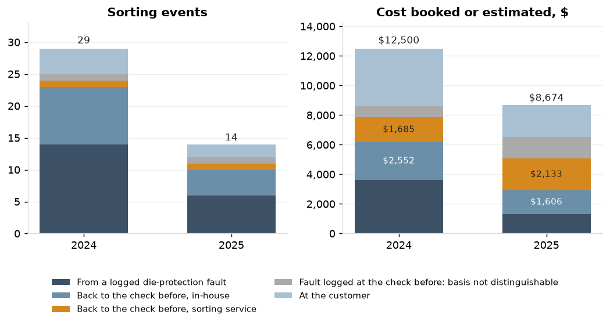
Appendix
Method and data
Control charts and capability indices follow AIAG SPC, 2nd edition: within-subgroup sigma is the pooled standard deviation across subgroups and overall sigma the standard deviation of all readings; Cpk intervals by the AIAG approximation and Ppk intervals by bootstrap. Stability is by Western Electric rules 1 to 4. Average run length is by the Markov chain method. Variance components are from a nested random-effects model (coil within die, subgroup within coil) fitted by REML. The coil regression is ordinary least squares on the coil's certificate values, with receiving values beside. Gauge R&R follows AIAG MSA, 4th edition, ANOVA method, with %tolerance at 6 sigma and ndc; attribute agreement is with 95% intervals and Fleiss' kappa. Autocorrelation of subgroup means is the lag-1 coefficient of the means less their run-and-coil segment mean, pooled over segments of at least 6 subgroups. Bounded characteristics (burr, flatness) are on the readings as recorded by the percentile method, with the Box-Cox result beside. Proportions carry Wilson intervals. Readings are used as recorded and none is corrected; a keyed reading that cannot be a measurement of the part (further than five tolerance widths from nominal) is set aside, with the count stated. Limits as set are the limits the software computed or the paper form carried at each entry; limits as computed are from a stable 25-subgroup baseline after the most recent sharpening. Press monitor times are aligned to the SPC terminal clock on run start. Data: the SPC software and transcribed paper charts, press monitor fault events, ERP, QMS, die maintenance log, calibration system, accounting and the gauge study worksheets, as exported; record boundaries and coverage are with each table.
Chart selection and limits (Section 3.1)
| Area | Measure | Holds | Partial | Does not hold | Basis |
|---|---|---|---|---|---|
| Chart and limits: the chart fits the variation | Rule 1 signals per 100 subgroups under limits computed from a stable baseline after each sharpening | 5 or fewer | over 5 to 15 | over 15 | No standard reference. A stable process on correct limits gives 0.27; one signal in twenty subgroups is the rate taken here as one a press crew can answer. |
| Chart and limits: the limits as set | Rule 1 signals per 100 subgroups under the limits as set, over the same under the computed limits | 0.67 to 1.5 | 0.5 to 0.67, or 1.5 to 2 | under 0.5 or over 2 | No standard reference. Limits as set within a half of the computed rate either way are taken as holding to the baseline. |
| Limits as set | Presses | Characteristics | Critical | Subgroups, 2025 | With a reading set aside | Subgroups used to set | Rule 1 signals | Signals, any rule | With an action recorded |
|---|---|---|---|---|---|---|---|---|---|
| PPAP study | high_speed | 314 | 54 | 49,032 | 0 | 60 | 11,193 | 11,193 | 3,107 |
| rolling 25 at entry | medium | 577 | 104 | 93,490 | 1,583 | 25 | 7,997 | 10,474 | 10,474 |
| Limits as set | Class | Characteristics | Subgroups compared | Signals as computed | Signals as set | By both | Share of computed also set | Low | High | As set per 100 | As computed per 100 |
|---|---|---|---|---|---|---|---|---|---|---|---|
| rolling 25 at entry | formed | 199 | 30,347 | 12,785 | 3,430 | 2,401 | 18.8% | 18.1% | 19.5% | 11.3 | 42.1 |
| rolling 25 at entry | hole diameter | 14 | 3,879 | 1,769 | 95 | 76 | 4.3% | 3.4% | 5.3% | 2.4 | 45.6 |
| rolling 25 at entry | other punched and dimensional | 238 | 30,935 | 1,080 | 792 | 515 | 47.7% | 44.7% | 50.7% | 2.6 | 3.5 |
| PPAP study | formed | 56 | 7,419 | 2,645 | 3,103 | 1,656 | 62.6% | 60.7% | 64.4% | 41.8 | 35.7 |
| PPAP study | hole diameter | 5 | 545 | 332 | 373 | 306 | 92.2% | 88.8% | 94.6% | 68.4 | 60.9 |
| PPAP study | other punched and dimensional | 59 | 6,099 | 219 | 328 | 143 | 65.3% | 58.8% | 71.3% | 5.4 | 3.6 |
| Presses and limits as set, by matrix class | Class | Characteristics | Subgroups | As set per 100 | As computed per 100 | As set over as computed |
|---|---|---|---|---|---|---|
| Paper presses, printed limits | flatness | 2 | 125 | 0.0 | 0.0 | |
| Paper presses, printed limits | formed heights and bend angles | 56 | 7,419 | 41.8 | 35.7 | 1.17 |
| Paper presses, printed limits | hole diameters | 5 | 545 | 68.4 | 60.9 | 1.12 |
| Paper presses, printed limits | other punched and dimensional | 57 | 5,974 | 5.5 | 3.7 | 1.50 |
| Software presses, rolling limits | flatness | 16 | 2,006 | 2.6 | 3.1 | 0.84 |
| Software presses, rolling limits | formed heights and bend angles | 199 | 30,347 | 11.3 | 42.1 | 0.27 |
| Software presses, rolling limits | hole diameters | 14 | 3,879 | 2.4 | 45.6 | 0.05 |
| Software presses, rolling limits | other punched and dimensional | 222 | 28,929 | 2.6 | 3.5 | 0.73 |
| Baseline after the sharpening | Intervals | Characteristics | Usable subgroups |
|---|---|---|---|
| fewer than 40 usable subgroups | 1,136 | 322 | 26,277 |
| stable on rules 1 to 4 | 974 | 472 | 112,827 |
| not stable | 311 | 220 | 28,379 |
| stable on rule 1 only | 154 | 127 | 15,797 |
| Presses by limits as set | Class | Limits | ARL in control | ARL, 1 sigma shift | ARL, 1.5 sigma shift |
|---|---|---|---|---|---|
| rolling 25 at entry | formed | computed from the stable baseline, rule 1 | 37.6 | 3.49 | 1.66 |
| rolling 25 at entry | hole diameter | computed from the stable baseline, rule 1 | 147.2 | 4.08 | 1.60 |
| rolling 25 at entry | other punched and dimensional | computed from the stable baseline, rule 1 | 98.4 | 3.90 | 1.61 |
| PPAP study | formed | computed from the stable baseline, rule 1 | 31.4 | 3.42 | 1.67 |
| PPAP study | formed | as set: PPAP study, rule 1 | 4.5 | 1.25 | 1.05 |
| PPAP study | hole diameter | computed from the stable baseline, rule 1 | 38.4 | 3.50 | 1.66 |
| PPAP study | hole diameter | as set: PPAP study, rule 1 | 17.0 | 1.90 | 1.23 |
| PPAP study | other punched and dimensional | computed from the stable baseline, rule 1 | 96.7 | 3.89 | 1.62 |
| PPAP study | other punched and dimensional | as set: PPAP study, rule 1 | 60.2 | 2.54 | 1.33 |
| Dies on the paper presses | Characteristics | Limits set at the most recent rebuild | Months in force, median | Longest | Sharpenings since, median | Most |
|---|---|---|---|---|---|---|
| 57.0 | 314.0 | 54.0 | 9.4 | 37.4 | 2 | 9.0 |
Capability (Section 3.2)
| Area | Measure | Holds | Partial | Does not hold | Basis |
|---|---|---|---|---|---|
| Capability | Median production Ppk on critical characteristics, and the share of PPAP studies within 0.25 of the filed Ppk; median Ppu by the percentile method on bounded characteristics | 1.33 or more, and half or more of studies within 0.25 | 1.33 or more, and under half of studies within 0.25 | under 1.33 | Ppk 1.33 (AIAG PPAP). The 0.25 band is the report's own. |
| Class | Studies | Characteristics | Subgroups | Readings | Subgroups set aside | Ppk filed | Cpk | Low | High | Ppk | Ppk low | Ppk high | Studies filed at least 0.40 above | Studies within 0.25 |
|---|---|---|---|---|---|---|---|---|---|---|---|---|---|---|
| formed | 94 | 84 | 32,786 | 163,930 | 392 | 1.84 | 1.68 | 1.64 | 1.70 | 1.04 | 0.97 | 1.12 | 86 | 1 |
| punched | 52 | 46 | 19,454 | 97,270 | 222 | 1.85 | 1.75 | 1.67 | 1.84 | 1.55 | 1.49 | 1.60 | 15 | 23 |
| all critical | 146 | 130 | 52,240 | 261,200 | 614 | 1.84 | 1.69 | 1.66 | 1.71 | 1.23 | 1.15 | 1.31 | 101 | 24 |
| Punched characteristic | Studies | Ppk filed | Production Ppk | Production Cpk | Filed at least 0.40 above | Within 0.25 |
|---|---|---|---|---|---|---|
| hole diameter | 16 | 1.98 | 1.45 | 2.13 | 10 | 1 |
| hole-to-edge | 19 | 1.77 | 1.54 | 1.64 | 3 | 10 |
| hole-to-hole | 17 | 1.79 | 1.60 | 1.68 | 2 | 12 |
| Bounded characteristic | Characteristics | Readings | Normal fit rejected (Anderson-Darling) | Rejected after Box-Cox | Box-Cox lambda | Ppu, percentile | Ppu, normal | Ppu, Box-Cox |
|---|---|---|---|---|---|---|---|---|
| burr height | 43 | 15,800 | 42 | 42 | 0.59 | 1.05 | 0.91 | 0.75 |
| flatness | 26 | 18,372 | 26 | 26 | 0.76 | 1.79 | 1.56 | 1.32 |
| Quality losses, all presses, year | Scrap booked, $ | Rework labor booked, $ | Revenue, $ | Share of revenue | Complaints | Pieces rejected | Pieces shipped | PPM (95% interval) | Sorting events | Quantity sorted | Sorting cost, $ |
|---|---|---|---|---|---|---|---|---|---|---|---|
| 2024 | 1,342,073 | 50,465 | 43,505,292 | 3.20% | 58 | 68,427 | 139,311,432 | 491 (320 to 688) | 29 | 148,499 | 12,500 |
| 2025 | 1,198,753 | 43,448 | 39,835,721 | 3.12% | 58 | 64,194 | 138,523,980 | 463 (283 to 664) | 14 | 101,154 | 8,674 |
Measurement systems (Section 3.3)
| Area | Measure | Holds | Partial | Does not hold | Basis |
|---|---|---|---|---|---|
| Measurement: the study result | Median %GRR of tolerance on the latest study on file of the gauges that measure the class; Fleiss' kappa against the burr gauge for the burr check | under 10%, with no latest study over 30%; kappa 0.75 or more | 10% to 30%, or a latest study over 30%; kappa 0.40 to 0.75 | over 30%; kappa under 0.40 | AIAG MSA: 10% and 30% of tolerance; kappa 0.75 and 0.40. |
| Measurement: coverage | Share of the class's gauges with a study on file; the cell takes the worse of the two parts | 90% or more | 50% to 90% | under 50% | No standard reference. The criterion is that every gauge in use is studied. |
| Check fixture, latest study on file | Location | Study date | Trigger as recorded | %GRR of tolerance | ndc |
|---|---|---|---|---|---|
| F-12836 | press PR-03 | 2026-01-09 | redesign | 7.3 | 11 |
| F-26076 | press PR-06 | 2026-01-09 | redesign | 11.6 | 6 |
| F-31056 | press PR-09 | 2026-01-09 | redesign | 7.2 | 11 |
| F-37771 | press PR-09 | 2026-01-09 | redesign | 11.8 | 7 |
| F-16315 | press PR-03 | 2026-01-12 | redesign | 10.2 | 8 |
| F-20417 | press PR-06 | 2026-01-12 | redesign | 31.2 | 4 |
| F-28553 | press PR-06 | 2026-01-12 | redesign | 7.4 | 11 |
| F-36526 | press PR-09 | 2026-01-12 | redesign | 11.2 | 9 |
| F-37321 | press PR-09 | 2026-01-12 | redesign | 8.7 | 11 |
| F-37329 | press PR-09 | 2026-01-12 | redesign | 7.3 | 19 |
| F-10823 | press PR-03 | 2026-01-13 | redesign | 11.3 | 12 |
| F-16467 | press PR-03 | 2026-01-13 | redesign | 8.3 | 9 |
| F-29540 | press PR-06 | 2026-01-13 | redesign | 9.5 | 11 |
| F-14026 | press PR-03 | 2026-01-14 | redesign | 10.0 | 8 |
| F-31102 | press PR-09 | 2026-01-14 | redesign | 33.6 | 3 |
| F-26998 | press PR-06 | 2026-01-15 | redesign | 7.3 | 10 |
| Class | Characteristics charted in 2025 | Gauges | With a study on file | %GRR, median | Highest | Over 30% | Characteristics on a gauge with no study |
|---|---|---|---|---|---|---|---|
| burr by limit sample | 179 | 179 | 0 | 0 | 179 | ||
| burr on the lab gauge | 179 | 2 | 0 | 0 | 179 | ||
| flatness | 32 | 27 | 1 | 7.3 | 7.3 | 0 | 31 |
| formed heights and bend angles | 397 | 179 | 16 | 9.8 | 33.6 | 2 | 344 |
| hole diameters | 23 | 12 | 12 | 9.4 | 13.3 | 0 | 0 |
| other punched and dimensional | 439 | 208 | 45 | 9.6 | 33.6 | 2 | 330 |
| pin-gauge attribute checks | 302 | 35 | 0 | 0 | 302 |
| Fixture | Study | Date | Tolerance, mm | %GRR as recorded | %GRR of tolerance | %Study variation | ndc | Repeatability SD, mm | Reproducibility SD, mm | Reproducibility share of gauge variance | Interaction p |
|---|---|---|---|---|---|---|---|---|---|---|---|
| F-10823 | assessment, January 2026 | 2026-01-13 | 0.36 | 11.3 | 11.3 | 11.5 | 12 | 0.0059 | 0.0032 | 23% | 0.881 |
| F-20417 | PPAP | 2020-10-22 | 0.40 | 8.9 | 8.9 | 8.2 | 17 | 0.0047 | 0.0036 | 37% | 0.171 |
| F-20417 | assessment, January 2026 | 2026-01-12 | 0.40 | 31.2 | 31.2 | 30.6 | 4 | 0.0112 | 0.0175 | 71% | 0.059 |
| F-31102 | PPAP | 2019-07-29 | 0.30 | 8.4 | 8.4 | 9.9 | 14 | 0.0037 | 0.0021 | 25% | 0.223 |
| F-31102 | assessment, January 2026 | 2026-01-14 | 0.30 | 33.6 | 33.6 | 35.7 | 3 | 0.0092 | 0.0141 | 70% | 0.715 |
| Source | DF | SS | MS | F |
|---|---|---|---|---|
| Part | 9 | 0.274956 | 0.030551 | 785.587 |
| Operator | 2 | 0.000687 | 0.000343 | 8.829 |
| Part * Operator | 18 | 0.000424 | 0.000024 | 0.606 |
| Repeatability | 60 | 0.002333 | 0.000039 | |
| Total | 89 | 0.278400 |
| Source | VarComp | %Contribution (of VarComp) | StdDev (SD) | Study Var (6 x SD) |
|---|---|---|---|---|
| Total Gage R&R | 0.0000456 | 1.33 | 0.00675 | 0.04053 |
| Repeatability | 0.0000354 | 1.03 | 0.00595 | 0.03568 |
| Reproducibility | 0.0000103 | 0.30 | 0.00320 | 0.01922 |
| Operator | 0.0000103 | 0.30 | 0.00320 | 0.01922 |
| Operator*Part | 0.0000000 | 0.00 | 0.00000 | 0.00000 |
| Part-To-Part | 0.0033906 | 98.67 | 0.05823 | 0.34937 |
| Total Variation | 0.0034362 | 100.00 | 0.05862 | 0.35171 |
| Source | DF | SS | MS | F |
|---|---|---|---|---|
| Part | 9 | 0.420404 | 0.046712 | 1513.456 |
| Operator | 2 | 0.000667 | 0.000333 | 10.800 |
| Part * Operator | 18 | 0.000556 | 0.000031 | 1.389 |
| Repeatability | 60 | 0.001333 | 0.000022 | |
| Total | 89 | 0.422960 |
| Source | VarComp | %Contribution (of VarComp) | StdDev (SD) | Study Var (6 x SD) |
|---|---|---|---|---|
| Total Gage R&R | 0.0000352 | 0.67 | 0.00593 | 0.03559 |
| Repeatability | 0.0000222 | 0.43 | 0.00471 | 0.02828 |
| Reproducibility | 0.0000130 | 0.25 | 0.00360 | 0.02160 |
| Operator | 0.0000101 | 0.19 | 0.00318 | 0.01905 |
| Operator*Part | 0.0000029 | 0.06 | 0.00170 | 0.01018 |
| Part-To-Part | 0.0051867 | 99.33 | 0.07202 | 0.43211 |
| Total Variation | 0.0052219 | 100.00 | 0.07226 | 0.43358 |
| Source | DF | SS | MS | F |
|---|---|---|---|---|
| Part | 9 | 0.340218 | 0.037802 | 174.371 |
| Operator | 2 | 0.016987 | 0.008493 | 39.178 |
| Part * Operator | 18 | 0.003902 | 0.000217 | 1.727 |
| Repeatability | 60 | 0.007533 | 0.000126 | |
| Total | 89 | 0.368640 |
| Source | VarComp | %Contribution (of VarComp) | StdDev (SD) | Study Var (6 x SD) |
|---|---|---|---|---|
| Total Gage R&R | 0.0004319 | 9.37 | 0.02078 | 0.12469 |
| Repeatability | 0.0001256 | 2.72 | 0.01121 | 0.06723 |
| Reproducibility | 0.0003063 | 6.65 | 0.01750 | 0.10501 |
| Operator | 0.0002759 | 5.99 | 0.01661 | 0.09966 |
| Operator*Part | 0.0000304 | 0.66 | 0.00551 | 0.03309 |
| Part-To-Part | 0.0041761 | 90.63 | 0.06462 | 0.38774 |
| Total Variation | 0.0046080 | 100.00 | 0.06788 | 0.40729 |
| Source | DF | SS | MS | F |
|---|---|---|---|---|
| Part | 9 | 0.147032 | 0.016337 | 945.207 |
| Operator | 2 | 0.000222 | 0.000111 | 6.429 |
| Part * Operator | 18 | 0.000311 | 0.000017 | 1.296 |
| Repeatability | 60 | 0.000800 | 0.000013 | |
| Total | 89 | 0.148366 |
| Source | VarComp | %Contribution (of VarComp) | StdDev (SD) | Study Var (6 x SD) |
|---|---|---|---|---|
| Total Gage R&R | 0.0000178 | 0.97 | 0.00422 | 0.02530 |
| Repeatability | 0.0000133 | 0.73 | 0.00365 | 0.02191 |
| Reproducibility | 0.0000044 | 0.24 | 0.00211 | 0.01265 |
| Operator | 0.0000031 | 0.17 | 0.00177 | 0.01061 |
| Operator*Part | 0.0000013 | 0.07 | 0.00115 | 0.00689 |
| Part-To-Part | 0.0018133 | 99.03 | 0.04258 | 0.25550 |
| Total Variation | 0.0018311 | 100.00 | 0.04279 | 0.25675 |
| Source | DF | SS | MS | F |
|---|---|---|---|---|
| Part | 9 | 0.158183 | 0.017576 | 197.729 |
| Operator | 2 | 0.012087 | 0.006043 | 67.987 |
| Part * Operator | 18 | 0.001247 | 0.000069 | 0.779 |
| Repeatability | 60 | 0.005333 | 0.000089 | |
| Total | 89 | 0.176850 |
| Source | VarComp | %Contribution (of VarComp) | StdDev (SD) | Study Var (6 x SD) |
|---|---|---|---|---|
| Total Gage R&R | 0.0002830 | 12.71 | 0.01682 | 0.10093 |
| Repeatability | 0.0000844 | 3.79 | 0.00918 | 0.05511 |
| Reproducibility | 0.0001986 | 8.92 | 0.01409 | 0.08456 |
| Operator | 0.0001986 | 8.92 | 0.01409 | 0.08456 |
| Operator*Part | 0.0000000 | 0.00 | 0.00000 | 0.00000 |
| Part-To-Part | 0.0019435 | 87.29 | 0.04409 | 0.26451 |
| Total Variation | 0.0022265 | 100.00 | 0.04719 | 0.28311 |
| Fixture | Characteristic | Period of 2025 | Readings | Production SD, mm | Gauge SD, mm | Measurement share of variance | All of 2025 |
|---|---|---|---|---|---|---|---|
| F-10823 | C-10823-04 | all of the year | 1,140 | 0.0629 | 0.0068 | 1.2% | 1.2% |
| F-20417 | C-20417-06 | from 2025-03 | 2,645 | 0.0890 | 0.0208 | 5.5% | 5.9% |
| F-31102 | C-31102-02 | from 2025-06 | 1,530 | 0.0425 | 0.0168 | 15.7% | 15.4% |
| Matched first pieces | Parts | Fixtures | Fixture less CMM, mm | Low | High | SD, mm | p |
|---|---|---|---|---|---|---|---|
| all fixtures, to 31 December 2025 | 163 | 69 | 0.014 | 0.012 | 0.015 | 0.012 | under 0.001 |
| Burr check study | Calls | Within operator | All operators agree | Pairs of operators agree | Against the burr gauge | Low | High | Fleiss' kappa | Kappa low | Kappa high |
|---|---|---|---|---|---|---|---|---|---|---|
| assessment, January 2026 | 600 | 86% | 28% | 71% | 80.3% | 77.0% | 83.3% | 0.44 | 0.32 | 0.56 |
| Operator, burr check study | Parts rejected | Rejected by the burr gauge | Agreement with the burr gauge |
|---|---|---|---|
| E-1015 | 27% | 52% | 75% |
| E-1010 | 31% | 52% | 79% |
| E-1006 | 35% | 52% | 83% |
| E-1003 | 41% | 52% | 87% |
| E-1022 | 71% | 52% | 81% |
| E-1018 | 75% | 52% | 77% |
| Entry method | Readings, 2025 | Ending in 0 or 5 | Times the uniform rate | Chi-square, last digit | Set aside as mis-keyed | At or one step inside a limit | One or two steps outside |
|---|---|---|---|---|---|---|---|
| keyed | 452,775 | 159,094 | 1.76 | 77,353 | 1,588 | 2,122 | 812 |
| paper transcription | 240,160 | 47,684 | 0.99 | 184 | 0 | 1,745 | 601 |
| Reading step | Characteristics |
|---|---|
| 0.05 | 89.0 |
| 0.01 | 745.0 |
| 0.005 | 1.0 |
| 0.001 | 24.0 |
Sampling frequency and recording (Section 3.4)
| Area | Measure | Holds | Partial | Does not hold | Basis |
|---|---|---|---|---|---|
| Sampling frequency | Parts between two routine checks at the realised stroke rate, median over the class's characteristics | no more than the median quantity sorted where a die-protection fault bounds the event | between the two | more than the median quantity sorted back to the check before | No standard reference. The two quantities are the shop's own sorting record of 2024 and 2025. |
| Press | Parts | Runs, 2025 | Strokes a minute, median | Check frequency, minutes | Fewest parts between checks | Median | Most | Realised share of run speed | Median at the realised rate |
|---|---|---|---|---|---|---|---|---|---|
| PR-01 | 37 | 227 | 144 | 120 | 7,320 | 26,100 | 36,000 | 0.55 | 14,443 |
| PR-02 | 41 | 260 | 143 | 120 | 7,200 | 29,280 | 35,760 | 0.55 | 16,238 |
| PR-03 | 10 | 151 | 174 | 60 | 9,960 | 19,290 | 35,400 | 0.55 | 10,643 |
| PR-04 | 41 | 203 | 144 | 120 | 7,260 | 29,520 | 38,160 | 0.55 | 16,333 |
| PR-05 | 48 | 241 | 47 | 120 | 2,460 | 5,460 | 15,480 | 0.56 | 3,070 |
| PR-06 | 10 | 145 | 62 | 60 | 2,520 | 3,720 | 7,440 | 0.55 | 2,063 |
| PR-07 | 45 | 215 | 46 | 120 | 2,100 | 5,040 | 12,000 | 0.56 | 2,833 |
| PR-08 | 43 | 183 | 45 | 60 | 1,860 | 3,720 | 14,400 | 0.56 | 2,086 |
| PR-09 | 10 | 190 | 45 | 60 | 2,040 | 3,480 | 6,420 | 0.56 | 1,934 |
| PR-10 | 43 | 229 | 44 | 120 | 1,860 | 4,680 | 12,480 | 0.57 | 2,647 |
| PR-11 | 44 | 172 | 44 | 120 | 1,800 | 5,340 | 12,000 | 0.56 | 2,992 |
| Class | Characteristics with routine checks | Check frequency, minutes, median | Parts between checks at the realised rate, median | 90th percentile |
|---|---|---|---|---|
| burr by limit sample | 179 | 120 | 3,576 | 17,228 |
| burr on the lab gauge | 179 | 480 | 17,812 | 74,346 |
| flatness | 32 | 120 | 3,538 | 17,829 |
| formed heights and bend angles | 397 | 120 | 3,568 | 17,663 |
| hole diameters | 23 | 60 | 3,201 | 15,606 |
| other punched and dimensional | 439 | 120 | 3,576 | 16,886 |
| pin-gauge attribute checks | 302 | 120 | 3,735 | 17,173 |
| Nonconformances of 2025 by defect code | Found at the press | At the dock audit | At the customer | All | Found after the press |
|---|---|---|---|---|---|
| burr | 37 | 12 | 13 | 62 | 40% |
| scratch | 50 | 0 | 9 | 59 | 15% |
| flatness | 57 | 0 | 0 | 57 | 0% |
| dimension | 45 | 0 | 2 | 47 | 4% |
| mixed part | 39 | 0 | 7 | 46 | 15% |
| first-piece dimension | 44 | 0 | 0 | 44 | 0% |
| missing or deformed hole | 29 | 0 | 14 | 43 | 33% |
| hole burr and size | 20 | 0 | 0 | 20 | 0% |
| formed dimension | 0 | 0 | 10 | 10 | 100% |
| packaging | 0 | 0 | 4 | 4 | 100% |
| Presses | Shift | Planned checks, 2025 | Recorded | Share | Low | High |
|---|---|---|---|---|---|---|
| all presses | days | 12,971 | 12,178 | 93.9% | 93.5% | 94.3% |
| all presses | nights | 11,270 | 9,453 | 83.9% | 83.2% | 84.5% |
| high-speed | days | 4,545 | 4,258 | 93.7% | 92.9% | 94.4% |
| high-speed | nights | 3,860 | 3,466 | 89.8% | 88.8% | 90.7% |
| medium | days | 8,426 | 7,920 | 94.0% | 93.5% | 94.5% |
| medium | nights | 7,410 | 5,987 | 80.8% | 79.9% | 81.7% |
| Planned time, hour | Shift | Planned checks | Recorded | Share |
|---|---|---|---|---|
| 06:00 | days | 1,804 | 1,379 | 76.4% |
| 07:00 | days | 1,015 | 988 | 97.3% |
| 08:00 | days | 1,743 | 1,680 | 96.4% |
| 09:00 | days | 1,010 | 962 | 95.2% |
| 10:00 | days | 1,780 | 1,731 | 97.2% |
| 11:00 | days | 1,019 | 985 | 96.7% |
| 12:00 | days | 1,804 | 1,750 | 97.0% |
| 13:00 | days | 1,021 | 986 | 96.6% |
| 14:00 | days | 1,775 | 1,717 | 96.7% |
| 15:00 | nights | 1,038 | 865 | 83.3% |
| 16:00 | nights | 1,802 | 1,509 | 83.7% |
| 17:00 | nights | 1,035 | 862 | 83.3% |
| 18:00 | nights | 1,817 | 1,516 | 83.4% |
| 19:00 | nights | 1,022 | 872 | 85.3% |
| 20:00 | nights | 1,779 | 1,503 | 84.5% |
| 21:00 | nights | 1,013 | 847 | 83.6% |
| 22:00 | nights | 1,764 | 1,479 | 83.8% |
| Routine subgroups | Subgroups | Stamped within five minutes of the hour | Share | On the time of the parts |
|---|---|---|---|---|
| all routine subgroups | 182,867 | 119,224 | 65.2% | 74.9% |
| keyed | 119,761 | 71,742 | 59.9% | 74.7% |
| paper transcription | 63,106 | 47,482 | 75.2% | 75.2% |
| Record | Subgroups | Entered more than 20 minutes after the parts | Share | Low | High | Minutes to entry, median |
|---|---|---|---|---|---|---|
| software presses, 2025, keyed | 119,761 | 18,106 | 15.1% | 14.9% | 15.3% | 3.1 |
| Runs by length | Runs | With no routine check |
|---|---|---|
| under two hours | 68 | 20 |
| two hours and over | 2,148 | 1 |
| Plant-wide item | Shift | Count | With | Share | Low | High |
|---|---|---|---|---|---|---|
| Planned checks recorded | days | 12,971 | 12,178 | 93.9% | 93.5% | 94.3% |
| Planned checks recorded | nights | 11,270 | 9,453 | 83.9% | 83.2% | 84.5% |
| Planned checks recorded | all | 24,241 | 21,631 | 89.2% | 88.8% | 89.6% |
| First check of the shift recorded | days | 1,804 | 1,379 | 76.4% | 74.4% | 78.3% |
| First check of the shift recorded | nights | 1,038 | 865 | 83.3% | 80.9% | 85.5% |
| First check of the shift recorded | all | 2,842 | 2,244 | 79.0% | 77.4% | 80.4% |
| Keyed entries made more than 20 minutes after the parts | days | 66,803 | 10,112 | 15.1% | 14.9% | 15.4% |
| Keyed entries made more than 20 minutes after the parts | nights | 52,958 | 7,994 | 15.1% | 14.8% | 15.4% |
| Keyed entries made more than 20 minutes after the parts | all | 119,761 | 18,106 | 15.1% | 14.9% | 15.3% |
| Software alarms acknowledged | days | 5,646 | 5,646 | 100.0% | 99.9% | 100.0% |
| Software alarms acknowledged | nights | 4,828 | 4,828 | 100.0% | 99.9% | 100.0% |
| Software alarms acknowledged | all | 10,474 | 10,474 | 100.0% | 100.0% | 100.0% |
| Paper signals with an action recorded | days | 5,899 | 1,658 | 28.1% | 27.0% | 29.3% |
| Paper signals with an action recorded | nights | 5,294 | 1,449 | 27.4% | 26.2% | 28.6% |
| Paper signals with an action recorded | all | 11,193 | 3,107 | 27.8% | 26.9% | 28.6% |
| Subgroups on a gauge in service and in calibration | days | 111,193 | 103,600 | 93.2% | 93.0% | 93.3% |
| Subgroups on a gauge in service and in calibration | nights | 92,190 | 85,612 | 92.9% | 92.7% | 93.0% |
| Subgroups on a gauge in service and in calibration | all | 203,383 | 189,212 | 93.0% | 92.9% | 93.1% |
Reaction to signals (Section 3.5)
| Area | Measure | Holds | Partial | Does not hold | Basis |
|---|---|---|---|---|---|
| Reaction | Share of signals with an action recorded: paper signals with an action noted, software alarms acknowledged with a text; for classes adjusted at the press, the added variance | 90% or more on both media, and no added variance | 50% to 90% on the lower medium | under 50% on the lower medium, or added variance with its interval above zero | No standard reference. The criterion is that every signal is answered. |
| Software alarms, 2025 | Rule 1 | Rule 2 only | Acknowledged with a text | Text of one word | Adjustment recorded |
|---|---|---|---|---|---|
| 10,474 | 7,997 | 2,477 | 10,474 | 4,691 | 1,738 |
| Paper presses, class | Characteristics | Subgroups | Signals | With an action recorded | Share | Low | High |
|---|---|---|---|---|---|---|---|
| formed | 144 | 23,911 | 9,527 | 2,853 | 29.9% | 29.0% | 30.9% |
| hole diameter | 7 | 1,455 | 547 | 42 | 7.7% | 5.7% | 10.2% |
| other punched and dimensional | 163 | 23,666 | 1,119 | 212 | 18.9% | 16.8% | 21.3% |
| Entry | Points | Count | Characteristics | Mean position, sigma | Next subgroup as a share of the position | Low | High |
|---|---|---|---|---|---|---|---|
| keyed | beyond two sigma, adjustment recorded | 1,971 | 336 | 3.40 | 0.16 | 0.09 | 0.23 |
| keyed | beyond two sigma, none recorded | 6,818 | 382 | 3.38 | 0.43 | 0.39 | 0.47 |
| keyed | beyond two sigma, characteristics not adjusted at the press | 1,907 | 120 | 2.77 | 0.21 | 0.13 | 0.28 |
| keyed | between one and two sigma | 20,083 | 420 | 1.26 | 0.58 | 0.55 | 0.60 |
| keyed | between one and two sigma, characteristics not adjusted at the press | 9,352 | 130 | 1.21 | 0.51 | 0.47 | 0.54 |
| paper transcription | beyond two sigma, adjustment recorded | 1,772 | 175 | 5.24 | 0.74 | 0.69 | 0.78 |
| paper transcription | beyond two sigma, none recorded | 6,201 | 214 | 5.17 | 0.81 | 0.78 | 0.83 |
| paper transcription | beyond two sigma, characteristics not adjusted at the press | 839 | 60 | 4.11 | 0.69 | 0.46 | 0.80 |
| paper transcription | between one and two sigma | 7,119 | 234 | 1.47 | 0.57 | 0.50 | 0.64 |
| paper transcription | between one and two sigma, characteristics not adjusted at the press | 2,942 | 69 | 1.43 | 0.32 | 0.23 | 0.42 |
| Characteristics, 2025 | Lag-1 autocorrelation | Low | High | Segments | Characteristics, count |
|---|---|---|---|---|---|
| adjusted at the press | -0.139 | -0.160 | -0.119 | 5,641 | 472 |
| not adjusted at the press | -0.066 | -0.084 | -0.047 | 2,019 | 155 |
| Comparison runs | Characteristics | Added variance, median | Low | High | Characteristics with more variance |
|---|---|---|---|---|---|
| no adjustment recorded and no point beyond two sigma | 204 | 9.9% | 8.7% | 13.7% | 165 |
| no adjustment recorded | 216 | 8.9% | 5.8% | 12.4% | 175 |
| Adjusted characteristics by class | Characteristics | Added variance, median | Low | High | With more variance |
|---|---|---|---|---|---|
| formed heights and bend angles | 119 | 21.9% | 16.9% | 38.1% | 89 |
| other punched and dimensional | 85 | 6.9% | 5.0% | 8.8% | 76 |
| Adjusted at the press | Entry | Points beyond two sigma or the printed limit | Adjustment recorded | Share | With a next subgroup | Next on the other side by more than one sigma | Share of those |
|---|---|---|---|---|---|---|---|
| yes | keyed | 9,741 | 2,188 | 22.5% | 8,789 | 1,765 | 20.1% |
| yes | paper transcription | 8,773 | 1,969 | 22.4% | 7,973 | 416 | 5.2% |
| no | keyed | 2,038 | 0 | 0.0% | 1,907 | 314 | 16.5% |
| no | paper transcription | 920 | 0 | 0.0% | 839 | 38 | 4.5% |
Coil-to-coil variation (Section 4.1)
| Variance components by class | Between coils | Low | High | Between subgroups within coil | Within subgroup | Between over within variance |
|---|---|---|---|---|---|---|
| formed | 54% | 50% | 61% | 6% | 40% | 1.51 |
| punched | 2% | 1% | 3% | 11% | 88% | 0.14 |
| all critical | 40% | 32% | 47% | 8% | 47% | 1.12 |
| Formed heights fitted | Study windows | Coils a window, median | Spread of coil means, share of tolerance | Spread about the certificate fit | About the receiving fit | R-squared, certificate | R-squared, receiving |
|---|---|---|---|---|---|---|---|
| 32.0 | 35.0 | 21 | 12.1% | 2.5% | 3.7% | 0.95 | 0.91 |
Die wear (Section 4.2)
| Die | Hole diameter | Intervals | Subgroups | Growth, mm per 100,000 shots | Low | High | R-squared within intervals | Stated interval, shots | Growth over the interval, share of tolerance |
|---|---|---|---|---|---|---|---|---|---|
| D-3459-C | C-13459-04 | 1 | 26 | 0.0094 | 0.0071 | 0.0117 | 0.74 | 150,000 | 28% |
| D-0417-B | C-20417-01 | 4 | 615 | 0.0092 | 0.0088 | 0.0096 | 0.74 | 367,000 | 21% |
| D-5987-A | C-35987-01 | 1 | 186 | 0.0089 | 0.0076 | 0.0103 | 0.47 | 377,000 | 24% |
| D-9540-C | C-29540-01 | 4 | 751 | 0.0089 | 0.0083 | 0.0095 | 0.56 | 314,000 | 23% |
| D-6458-C | C-26458-04 | 1 | 101 | 0.0074 | 0.0063 | 0.0086 | 0.61 | 292,000 | 20% |
| D-5609-A | C-15609-01 | 5 | 261 | 0.0071 | 0.0065 | 0.0077 | 0.70 | 203,000 | 21% |
| D-1540-A | C-31540-02 | 3 | 490 | 0.0071 | 0.0066 | 0.0076 | 0.61 | 275,000 | 23% |
| D-2617-A | C-22617-01 | 2 | 211 | 0.0071 | 0.0060 | 0.0081 | 0.47 | 374,000 | 25% |
| D-8553-A | C-28553-01 | 3 | 632 | 0.0070 | 0.0064 | 0.0076 | 0.47 | 374,000 | 19% |
| D-9473-A | C-39473-01 | 1 | 49 | 0.0069 | 0.0027 | 0.0111 | 0.19 | 267,000 | 22% |
| D-6315-A | C-16315-02 | 4 | 156 | 0.0066 | 0.0060 | 0.0072 | 0.76 | 150,000 | 18% |
| D-2929-B | C-32929-01 | 1 | 81 | 0.0065 | 0.0058 | 0.0073 | 0.78 | 233,000 | 32% |
| D-2043-B | C-22043-02 | 3 | 375 | 0.0063 | 0.0057 | 0.0068 | 0.55 | 351,000 | 20% |
| D-7329-A | C-37329-02 | 2 | 168 | 0.0063 | 0.0052 | 0.0073 | 0.48 | 311,000 | 27% |
| D-9736-A | C-39736-01 | 2 | 280 | 0.0062 | 0.0056 | 0.0069 | 0.55 | 281,000 | 18% |
| D-1102-A | C-31102-01 | 3 | 479 | 0.0060 | 0.0056 | 0.0065 | 0.59 | 384,000 | 21% |
| D-5731-A | C-15731-02 | 7 | 376 | 0.0058 | 0.0055 | 0.0062 | 0.73 | 341,000 | 20% |
| D-2558-A | C-22558-01 | 3 | 266 | 0.0056 | 0.0050 | 0.0062 | 0.57 | 195,000 | 22% |
| D-2836-C | C-12836-01 | 6 | 259 | 0.0056 | 0.0050 | 0.0061 | 0.62 | 206,000 | 16% |
| D-6291-A | C-16291-02 | 4 | 98 | 0.0047 | 0.0039 | 0.0054 | 0.63 | 150,000 | 22% |
| D-1687-A | C-11687-01 | 6 | 251 | 0.0040 | 0.0037 | 0.0043 | 0.70 | 247,000 | 20% |
| Burr height on the burr gauge against shots since sharpening | Value |
|---|---|
| Dies fitted (30 burr gauge subgroups or more, 2024 and 2025) | 124 |
| Burr gauge subgroups per die, median | 70 |
| R-squared by die, median | 0.91 |
| Shots at 80% of the burr limit, median by die | 263,512 |
| Stated sharpening interval, median over the same dies | 236,500 |
| Dies whose stated interval is longer than the count at 80% | 41 of 124 |
| The same, longer than the upper bound of the count | 35 |
| Dies whose interval as run (logged median) is longer than the count at 80% | 52 of 103 |
| Dies whose stated interval is longer than the count at the limit | 0 |
| Run intervals ending in 2025 with shot counts at both ends | 308 |
| Logged intervals ending in 2025, and those left out | A logged interval under 20,000 shots is a sharpening followed by a rebuild, or an entry with no shots between it and the one beside it, and is not a run interval; 45 of the 353 intervals ending in 2025 are left out on this rule. |
| Logged shots over the stated interval, median (quartiles) | 1.14 (1.04 to 1.25) |
| Intervals longer than stated | 82% |
| Defect code | Detected at | Nonconformances, 2025 | Quantity affected | With shots known | Run ended within the stated interval | Past it | Position, median |
|---|---|---|---|---|---|---|---|
| burr | customer | 13 | 8,071 | 13 | 0 | 13 | 1.41 |
| burr | dock audit | 12 | 459,797 | 11 | 0 | 11 | 1.26 |
| burr | press check | 37 | 1,129,765 | 37 | 1 | 36 | 1.30 |
| hole burr and size | press check | 20 | 75,417 | 20 | 8 | 12 | 1.04 |
Die events and sorting (Section 4.3)
| Basis of the sorting, found at the press, 2024 and 2025 | Events | Quantity sorted, median | Largest | Rejected share | Parts since the check before (estimated), median | Cost booked or estimated, $ |
|---|---|---|---|---|---|---|
| fault logged at the check before; basis not distinguishable | 2 | 14,786 | 15,908 | 10% | 14,322 | 2,214 |
| sorted back to the check before, in-house | 13 | 4,996 | 12,784 | 37% | 3,867 | 4,158 |
| sorted back to the check before, sorting service | 2 | 19,204 | 20,714 | 13% | 11,530 | 3,818 |
| sorted from a logged die-protection fault | 20 | 3,374 | 8,816 | 77% | 8,682 | 4,945 |
| Year | Sorting events | Traced to a die event between two checks | Followed a customer complaint | Quantity sorted | Hours booked | Hours estimated from run hours | Cost booked, $ | Cost booked or estimated, $ | Share of hours booked |
|---|---|---|---|---|---|---|---|---|---|
| 2024 | 29 | 25 | 4 | 148,499 | 135.3 | 28.8 | 10,831 | 12,500 | 82% |
| 2025 | 14 | 12 | 2 | 101,154 | 83.8 | 19.9 | 7,518 | 8,674 | 81% |